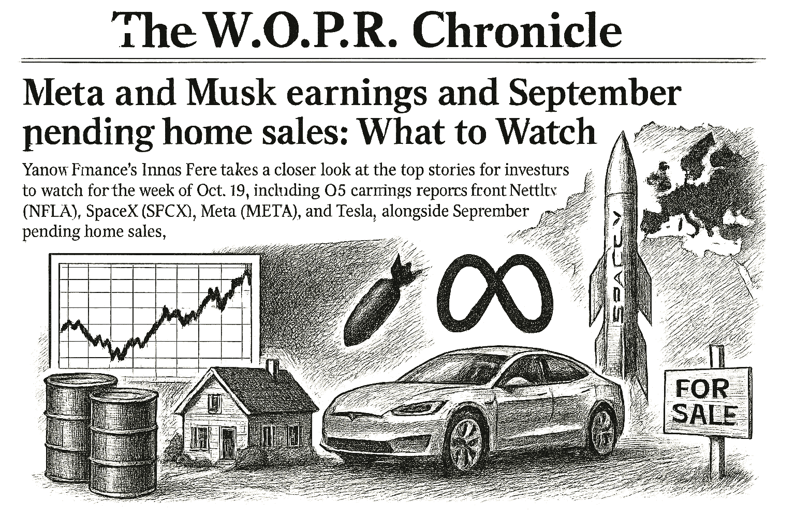

SPY
Current: $766.45Change: -11.65 (-1.50%)
Updated:
Source: yahoo_chartFreshness: fresh


Yahoo Finance's Innes Fere takes a closer look at the top stories for investors to watch for the week of Oct. 19, including Q3 earnings reports from Netflix (NFLX), SpaceX (SPCX), Meta (META), and Tesla (TSLA), alongside September pending home sales.

Today's Headline: Meta and Musk earnings and September pending home sales: What to Watch
Setup: Yahoo Finance's Innes Fere takes a closer look at the top stories for investors to watch for the week of Oct. 19, including Q3 earnings reports from Netflix (NFLX), SpaceX (SPCX), Meta (META), and Tesla (TSLA), alongside September pending home sales.
Primary Topic: Geopolitical tensions
Specific Development: A Houthi attack on a Yemeni military camp has resulted in at least 18 fatalities, raising concerns over regional stability.
Why Today Is Different: This incident has led to increased volatility in the markets, particularly affecting tech stocks and commodities.
Secondary Topics: Earnings season; Market volatility; Sector performance
Tone: cautious
Sectors: Technology; Energy; Commodities
Companies: Tesla; Meta; SpaceX
Commodities: Brent; WTI; Gold
Countries Or Regions: Yemen; Middle East
Macro Themes: Geopolitical risks; Earnings impact
Why This Story: The market is reacting to geopolitical instability, which could influence investor sentiment and trading strategies during a critical earnings week.
Why This Matters: Meta and Musk earnings and September pending home sales: What to Watch is the clearest current evidence-led frame for Joshua's observation-only review; missing facts remain explicit intelligence gaps.

Summary: Overnight, global markets reacted to geopolitical tensions with notable volatility, particularly in tech and energy sectors.
What Happened Overnight: A Houthi attack in Yemen has raised concerns, leading to increased volatility in tech stocks and commodities.
What Changed Materially: Tech stocks, particularly QQQ and SPY, have seen significant declines, while energy stocks have gained.
Which Assets Sectors Are Affected: Tech stocks; Energy stocks; Commodities
Does It Look Like Noise Or A Real Regime Input: This appears to be a real regime input due to the geopolitical nature of the events.
Why This Matters: Joshua can use verified cross-asset moves and deterministic risk context while keeping causation explicitly unresolved.

TSLA Earnings Expectations — 2026-10-21, After Close
Consensus EPS: $0.45
Year-ago EPS: unavailable
Expected EPS growth: unavailable
Consensus revenue: $28.4B
Year-ago revenue: unavailable
Expected revenue growth: unavailable
Source: finnhub_earnings_calendar · As of: 2026-10-19T14:07:18.911720+00:00 · Freshness: current

- WOPR learning pipeline: Collecting samples
- Candidates evaluated 24h: 0
- Current gate: Evidence
- Notification ledger events in 24h: 13
- Pending orders created/canceled/filled/expired: 2/2/0/0
- Pending lifecycle interpretation: Pending-order cancellations have trackable reasons and no obvious rapid churn pattern.
- Portfolio risk: Label: High / Score: 100.0
- Latest intelligence gap report: intelligence_gap_report_2026-10-18.pdf
Why This Matters: The active gate is Evidence, so the key question is why candidates are stopping before approval, not how to force trades.

- Sentinel role: infrastructure and operational status only.
- State: ONLINE
- Last successful validation: 2026-10-19T14:15:11.339694+00:00
- Payloads accepted/rejected: 27892/0
- Node health score: 100
Why This Matters: Sentinel is ONLINE, so Joshua should use its context only to the extent the latest accepted pulse is fresh and authenticated.

CANDIDATES MOVING THROUGH JOSHUA'S INVESTMENT-REVIEW WORKFLOW
FROZEN DAILY BRIEF SNAPSHOT | 2026-10-19T14:13:37.940808+00:00
QUEUE SUMMARY | Investment Ready: 0 | Waiting for Price: 0 | Waiting for Evidence: 1 | Research Underway: 1 | Governance Hold: 6 | Monitor Only: 0
Investment-ready status: No candidates are currently Investment Ready.
#7 NVDA - Waiting for Evidence [Moved Down 5->7]
Joshua's Thesis: Positive thesis not yet established.
Why Waiting: Positioning gate failed.
Price: 216.85 now; 215.20 preferred entry
What Unlocks It: Clear valuation support; Evidence that the business quality matches the risk being taken; Independent evidence streams pointing the same way
Portfolio Fit: 0.0/100 — VERY LOW ↓
Portfolio Fit Drivers: projected Technology exposure 80.0%; projected AI infrastructure exposure 80.0%; candidate amount $100 vs $25 currently allocated
Candidate Risk: 100.0/100 — VERY HIGH ↑
Risk Drivers: projected Technology exposure 80.0%; projected AI infrastructure exposure 80.0%; candidate amount $100 vs $25 currently allocated
Next: Positioning status must no longer be warning. Owner: Joshua.
#8 AVGO - Governance Hold [Moved Down 6->8]
Joshua's Thesis: Positive thesis not yet established.
Why Waiting: Governance gate has not cleared.
Price: 335.57 now; 357.70 preferred entry
What Unlocks It: Governance gate clears; Clear valuation support; Evidence that the business quality matches the risk being taken
Portfolio Fit: 0.0/100 — VERY LOW ↓
Portfolio Fit Drivers: projected Technology exposure 80.0%; projected AI infrastructure exposure 80.0%; candidate amount $100 vs $25 currently allocated
Candidate Risk: 100.0/100 — VERY HIGH ↑
Risk Drivers: projected Technology exposure 80.0%; projected AI infrastructure exposure 80.0%; candidate amount $100 vs $25 currently allocated
Next: Re-evaluate after the recorded gate clears. Owner: Columbo.
#12 QBTS - Governance Hold [Moved Up 16->12]
Joshua's Thesis: Positive thesis not yet established.
Why Waiting: Governance gate has not cleared.
Price: 11.89 now; 17.52 preferred entry
What Unlocks It: Governance gate clears; Clear valuation support; Evidence that the business quality matches the risk being taken
Portfolio Fit: 0.0/100 — VERY LOW
Portfolio Fit Drivers: projected Unclassified exposure 100.0%; projected Unclassified exposure 100.0%; candidate amount $100 vs $25 currently allocated
Candidate Risk: 100.0/100 — VERY HIGH
Risk Drivers: projected Unclassified exposure 100.0%; projected Unclassified exposure 100.0%; candidate amount $100 vs $25 currently allocated
Next: Re-evaluate after the recorded gate clears. Owner: Joshua.
#17 PLTR - Governance Hold [Moved Down 11->17]
Joshua's Thesis: Positive thesis not yet established.
Why Waiting: Governance gate has not cleared.
Price: 192.29 now; 191.63 preferred entry
What Unlocks It: Governance gate clears; Clear valuation support; Evidence that the business quality matches the risk being taken
Portfolio Fit: 0.0/100 — VERY LOW ↓
Portfolio Fit Drivers: projected Technology exposure 80.0%; projected AI software exposure 80.0%; candidate amount $100 vs $25 currently allocated
Candidate Risk: 100.0/100 — VERY HIGH ↑
Risk Drivers: projected Technology exposure 80.0%; projected AI software exposure 80.0%; candidate amount $100 vs $25 currently allocated
Next: Re-evaluate after the recorded gate clears. Owner: Columbo.
#18 RCL - Governance Hold [Moved Up 22->18]
Joshua's Thesis: Positive thesis not yet established.
Why Waiting: Governance gate has not cleared.
Price: 281.40 now; 278.57 preferred entry
What Unlocks It: Governance gate clears; Clear valuation support; Evidence that the business quality matches the risk being taken
Portfolio Fit: 0.0/100 — VERY LOW
Portfolio Fit Drivers: projected Unclassified exposure 100.0%; projected Unclassified exposure 100.0%; candidate amount $100 vs $25 currently allocated
Candidate Risk: 100.0/100 — VERY HIGH
Risk Drivers: projected Unclassified exposure 100.0%; projected Unclassified exposure 100.0%; candidate amount $100 vs $25 currently allocated
Next: Re-evaluate after the recorded gate clears. Owner: Columbo.
#23 SPCX - Governance Hold [Moved Up 24->23]
Joshua's Thesis: Positive thesis not yet established.
Why Waiting: Governance gate has not cleared.
Price: 149.90 now; 152.11 preferred entry
What Unlocks It: Governance gate clears; Clear valuation support; Evidence that the business quality matches the risk being taken
Portfolio Fit: 0.0/100 — VERY LOW
Portfolio Fit Drivers: projected Unclassified exposure 100.0%; projected Unclassified exposure 100.0%; candidate amount $100 vs $25 currently allocated
Candidate Risk: 100.0/100 — VERY HIGH
Risk Drivers: projected Unclassified exposure 100.0%; projected Unclassified exposure 100.0%; candidate amount $100 vs $25 currently allocated
Next: Re-evaluate after the recorded gate clears. Owner: Advisory Committee.
#24 XRAY - Research Underway [Moved Up 25->24]
Joshua's Thesis: Positive thesis not yet established.
Why Waiting: Research evidence is still being gathered.
Price: 8.45 now; Preferred entry not established.
What Unlocks It: Clear valuation support; Evidence that the business quality matches the risk being taken; Independent evidence streams pointing the same way
Portfolio Fit: 0.0/100 — VERY LOW
Portfolio Fit Drivers: projected Unclassified exposure 100.0%; projected Unclassified exposure 100.0%; candidate amount $100 vs $25 currently allocated
Candidate Risk: 100.0/100 — VERY HIGH
Risk Drivers: projected Unclassified exposure 100.0%; projected Unclassified exposure 100.0%; candidate amount $100 vs $25 currently allocated
Next: Clear valuation support; Evidence that the business quality matches the risk being taken; Independent evidence streams pointing the same way. Owner: Columbo.
#25 UUUU - Governance Hold [NEW]
Joshua's Thesis: Positive thesis not yet established.
Why Waiting: Governance gate has not cleared.
Price: 8.31 now; 14.60 preferred entry
What Unlocks It: Governance gate clears; Clear valuation support; Evidence that the business quality matches the risk being taken
Portfolio Fit: 0.0/100 — VERY LOW
Portfolio Fit Drivers: projected Unclassified exposure 100.0%; projected Unclassified exposure 100.0%; candidate amount $100 vs $25 currently allocated
Candidate Risk: 100.0/100 — VERY HIGH
Risk Drivers: projected Unclassified exposure 100.0%; projected Unclassified exposure 100.0%; candidate amount $100 vs $25 currently allocated
Next: Re-evaluate after the recorded gate clears. Owner: Advisory Committee.
Since the prior Chronicle: DIA - Removed
Observation only. This section creates no recommendation, order, authority, or execution instruction.

- If NVDA reaches the recorded price condition <= 215.2, which recorded evidence and governance requirements would still remain?
- Which recorded governance requirement must clear before AVGO can advance?
- Which recorded governance requirement must clear before QBTS can advance?
- Which recorded governance requirement must clear before PLTR can advance?
- What TSLA EPS or revenue result would materially change the current recorded thesis?

The recent Houthi attack has heightened geopolitical risks, leading to increased volatility in the markets. Tech stocks are particularly sensitive to these developments, as investor sentiment shifts amid earnings season. The interplay between geopolitical events and corporate earnings will be critical in shaping market direction.

Compared to: 2026-10-16
- Market weather: Cautious -> Balanced
- Top opportunity: Still DELL
- Joshua gate: Learning trust -> Evidence
- 2Y Treasury.last_price: 4.74 -> 4.74 (unchanged); 2Y Treasury.last_price changed 0.00% versus the prior frozen Chronicle snapshot.
- 2Y Treasury.percent_change: -0.6289308176100495 -> -0.6289308176100495 (unchanged); 2Y Treasury.percent_change changed 0.00% versus the prior frozen Chronicle snapshot.
- 10Y Treasury.last_price: 5.09 -> 5.09 (unchanged); 10Y Treasury.last_price changed 0.00% versus the prior frozen Chronicle snapshot.
- 10Y Treasury.percent_change: -0.19607843137254485 -> -0.19607843137254485 (unchanged); 10Y Treasury.percent_change changed 0.00% versus the prior frozen Chronicle snapshot.
- 30Y Treasury.last_price: 5.43 -> 5.43 (unchanged); 30Y Treasury.last_price changed 0.00% versus the prior frozen Chronicle snapshot.
- 30Y Treasury.percent_change: 0.0 -> 0.0 (unchanged); Baseline was zero; percentage significance is unavailable.
- SPY.last_price: 766.98 -> 766.45 (down); SPY.last_price changed 0.07% versus the prior frozen Chronicle snapshot.
- SPY.percent_change: -1.429122220794243 -> -1.4972368590155478 (down); SPY.percent_change changed 4.77% versus the prior frozen Chronicle snapshot.
- QQQ.last_price: 719.45 -> 717.59 (down); QQQ.last_price changed 0.26% versus the prior frozen Chronicle snapshot.
- QQQ.percent_change: -3.5641520561900055 -> -3.81346844673207 (down); QQQ.percent_change changed 7.00% versus the prior frozen Chronicle snapshot.
- IWM.last_price: 271.32 -> 271.04 (down); IWM.last_price changed 0.10% versus the prior frozen Chronicle snapshot.
- IWM.percent_change: -2.3677581863979795 -> -2.4685138539042666 (down); IWM.percent_change changed 4.26% versus the prior frozen Chronicle snapshot.

Joshua did not materially change its top opportunity: DELL remains first. The useful question is whether confidence improved, deteriorated, or merely stayed unproven.
- Unknown: Tesla's earnings report; why it matters: Could provide insights into consumer demand and production capabilities. - Current observations are not sufficient to confirm or retire this warning.
- Unknown: Upcoming Fed meeting; why it matters: Will clarify the Fed's stance on interest rates amid inflation concerns. - Current observations are not sufficient to confirm or retire this warning.
- Unknown: Geopolitical developments in the Middle East; why it matters: Could impact oil prices and market sentiment. - Current observations are not sufficient to confirm or retire this warning.
Portfolio Construction Review
Current allocation: 25.0 allocated.
Largest sector: Unclassified at 100.0%.
Largest theme: Unclassified at 100.0%.
Diversification: Concentrated (0.0).
Cash allocation: 97.5% unallocated.
Recommended exposure: DELL at portfolio-fit score 0.0.
Portfolio fit: DELL has a mixed portfolio fit; the diversification improvement is not decisive yet.
Why This Matters: Portfolio Manager evaluates whether an opportunity improves this portfolio; it does not select the investment, vote, or authorize execution.

Focus on how geopolitical developments could impact earnings expectations and market sentiment today.

| Can trigger trade | no |
| Can modify trade rules | no |
| Can add watch items | yes |
| Can add review questions | yes |
| Can adjust confidence notes | yes |
| Input policy | external_intelligence_plus_sanitized_internal_observations |
| External policy | The Editor-in-Chief synthesizes current world/market context where available and labels unknowns; provider/model provenance remains separate. |
| Internal policy | Joshua/WOPR/Sentinel facts are supplied as sanitized observation-only summaries. |
| Editorial model | gpt-4o-mini |
- Selected by a deterministic daily rotation through symbols already present in the persisted Chronicle snapshot.
- Committee status: gather_more_data; confidence: 70.8.
- Next recorded catalyst: FOMC Meeting Two-day meeting, October 27 - 28 Press Conference.
- Tesla Earnings Preview: Grounded Margins And Flying Cars
- Desk: earnings; source: SeekingAlpha; linked symbols: TSLA.
- Published: 10/18/26 01:45 MST.
- High-impact watch: FOMC Meeting Two-day meeting, October 27 - 28 Press Conference - 10/28/26 11:00 MST.
- Affected assets: US equities, Treasuries, USD; source: federal_reserve_calendar.
- TSLA earnings: October 21, 2026, after close.
- RCL earnings: October 27, 2026, before open.
- FDX earnings: October 28, 2026, after close.
- Energy: 3.56% session performance; source: persisted sector ledger.
- Consumer Staples: 3.56% session performance; source: persisted sector ledger.
- Materials: 2.84% session performance; source: persisted sector ledger.
- WTI: 2.35% recorded move; price: 97.32.
- Session: open; catalyst status: possible; source: yahoo_chart.
- Tesla's earnings report; why it matters: Could provide insights into consumer demand and production capabilities.
- State: healthy; score: 60.40/100; advance/decline ratio: 1.05.
- Above 50-day average: 49.60%; sample: 119; provider: sentinel_sampled_breadth.
- Decision outcomes evaluated: 16; currently untestable: 0.
- Warning review: unknown 3; confidence calibration: insufficient_sample.
- Current macro regime: defensive_rotation; change probability: unavailable.
- Risk dashboard: cautious (55/100); breadth: healthy; sentiment: neutral.
- Scenario board only - a current-state observation, not a forecast or execution instruction.
- Co-founded Oaktree and shaped modern thinking about risk, market cycles, distressed credit, and second-level analysis.
- Published quotation: "You can't predict. You can prepare."
- Published framework: Invest defensively, insist on a favorable price relative to value, understand where markets stand in their cycles, seek asymmetric outcomes, and resist the emotional extremes of the crowd.
- Committee lens: Marks supplies cycle awareness and defensive calibration: is optimism already in the price, what could cause permanent loss, and is the payoff asymmetric?
- Public philosophy profile only; no participation, endorsement, or current recommendation is implied.
- Which recorded governance requirement must clear before PLTR can advance?
- DELL: No canonical symbol-specific material event is linked.
- Attach the missing DELL evidence before the next committee review.
- Define evidence that would confirm or retire each unresolved warning before the next review window.
- If NVDA reaches the recorded price condition <= 215.2, which recorded evidence and governance requirements would still remain?
- Which recorded governance requirement must clear before AVGO can advance?
- Which recorded governance requirement must clear before QBTS can advance?
- Which recorded governance requirement must clear before PLTR can advance?
- Evidence agenda: DELL - No canonical symbol-specific material event is linked.
- Proposed review: Upcoming Fed meeting; why it matters: Will clarify the Fed's stance on interest rates amid inflation concerns.
- Proposed review: Geopolitical developments in the Middle East; why it matters: Could impact oil prices and market sentiment.
- Canonical instruments reviewed: 24; delayed 3, fresh 18, stale 3.
- Leading sources: yahoo_chart (21), treasury_official_yield_curve (3).
- Snapshot recorded: 10/19/26 07:07 MST.
Meta and Musk earnings and September pending home sales: What to Watch
Storm meter: Elevated
#7 NVDA - Waiting for Evidence [Moved Down 5->7]
Observation mode: observation_only
Watch: Tesla's earnings report; why it matters: Could provide insights into consumer demand and production capabilities.
Question: If NVDA reaches the recorded price condition <= 215.2, which recorded evidence and governance requirements would still remain?